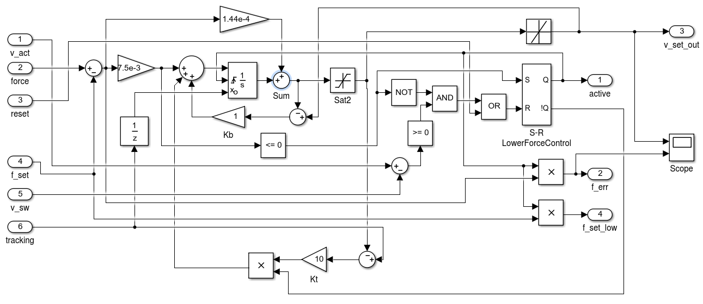
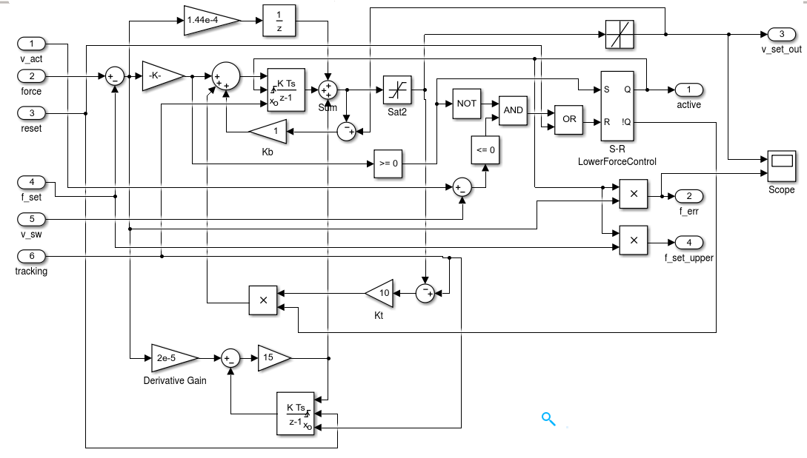

Introduction
For a kite power system, the reel-out speed of the winch must be controlled such that the maximal tether force is never exceeded, while the reel-out speed should be optimized for maximal power over the full cycle at wind speeds below rated wind speed. To keep the kite controllable, also a minimal tether force limit has to be kept. Depending on the mode of operation, one of the following three controllers is used:
Enum WinchControllerState
WinchControllers.WinchControllerState — Type@enum WinchControllerStateThe three values that tell us which sub-controller is active.
- wcsLowerForceLimit = 0
- wcsSpeedControl = 1
- wcsUpperForceLimit = 2
CalcVSetIn
WinchControllers.CalcVSetIn — Typemutable struct CalcVSetInComponent for calculation v_set_in, using soft switching.
Fields
- wcs::WCSettings
- mixer2::Mixer_2CH: mixer component. Default:
Mixer_2CH(wcs.dt, wcs.t_blend) - input_a: Default: 0
- input_b: Default: 0
WinchControllers.CalcVSetIn — Methodfunction CalcVSetIn(wcs::WCSettings)Constructor for component for calculation v_set_in, using soft switching.
Parameters
- wcs:: WCSettings: settings struct with the winch controller settings
Returns
- a new struct of type CalcVSetIn
WinchControllers.set_vset_pc — Methodset_vset_pc(cvi::CalcVSetIn, v_set_pc, force)Parameters:
- force: measured tether force [N]
v_set_pc: only used during manual operation or park-at-length. If it isnothing,v_set_inis calculated as function of the force.
Returns:
- nothing
WinchControllers.calc_output — Methodcalc_output(cvi::CalcVSetIn)Parameters
- cvi::CalcVSetIn: A struct of type CalcVSetIn
Returns
v_set_in: Eitherv_set, or a value, proportional to the square root of the force.
WinchControllers.on_timer — Methodon_timer(cvi::CalcVSetIn)Update the mixer. Must be called once per time-step.
Parameters
- cvi::CalcVSetIn: Reference to the CalcVSetIn component
Returns
- nothing
SpeedController
WinchControllers.SpeedController — Typemutable struct SpeedControllerPI controller for the reel-out speed of the winch in speed control mode. While inactive, it tracks the value from the tracking input. Back-calculation is used as anti-windup method and for tracking. The constant for anti-windup is K_b, the constant for tracking K_t Implements the following block diagram: 
Fields
wcs::WCSettingsintegrator::Integrator: Default: Integrator(wcs.dt)limiter::RateLimiter: Default: RateLimiter(wcs.dt, wcs.max_acc)delay::UnitDelay: Default: UnitDelay()v_act::Float64: Default: 0v_set_in::Float64: Default: 0inactive::Bool: Default: truetracking::Float64: Default: 0v_err::Float64: Default: 0v_set_out::Float64: Default: 0sat_out::Float64: Default: 0res::StaticArraysCore.MVector{2, Float64}: Default: zeros(2)
WinchControllers.SpeedController — MethodSpeedController(wcs::WCSettings)Constructor for a SpeedController, based on the winch controller settings.
Parameters
- wcs::WCSettings: the winch controller settings struct
Returns
- a struct of type SpeedController
WinchControllers.set_inactive — Methodset_inactive(sc::SpeedController, inactive::Bool)De-activate the speed controller if the parameter inactive is true, otherwise activate it and reset the integrator and the limiter.
Parameters
- sc::SpeedController: the speed controller to de-activate or activate
Returns
- nothing
WinchControllers.set_v_act — Methodset_v_act(sc::SpeedController, v_act)Set the actual reel-out speed of the speed controller sc to v_act.
Parameters
- sc::SpeedController: the speed controller
v_act: the actual reel-out speed
Returns
- nothing
WinchControllers.set_v_set — Methodset_v_set(sc::SpeedController, v_set)Set the set speed of the speed controller sc to v_set.
Parameters
- sc::SpeedController: the speed controller
v_set: the set value of the reel-out speed
Returns
- nothing
WinchControllers.set_v_set_in — Methodset_v_set_in(sc::SpeedController, v_set_in)Set the signal v_set_in of the speed controller to v_set_in.
Parameters
- sc::SpeedController: the speed controller
v_set_in: the value to assign to the signalv_set_in
Returns
- nothing
WinchControllers.set_tracking — Methodset_tracking(sc::SpeedController, tracking)Set the signal tracking of the speed controller to tracking.
Parameters
- sc::SpeedController: the speed controller
tracking: the value to assign to the signaltracking
Returns
- nothing
WinchControllers.get_v_set_out — Methodget_v_set_out(sc::SpeedController)Calculate the output value of the controller by using a non-linear solver.
Parameters
- sc::SpeedController Reference to the SpeedController component
Returns
v_set_out: the synchronous speed, calculated by the controller
WinchControllers.get_v_error — Methodget_v_error(sc::SpeedController)Compute and return the velocity error for the given SpeedController instance sc.
Arguments
- sc::SpeedController: The speed controller object for which the velocity error is to be calculated.
Returns
- The velocity error
v_err[m/s]. If the controller is inactive, it returnsNaN.
WinchControllers.on_timer — Methodon_timer(sc::SpeedController)Update the SpeedController. Must be called once per time-step.
Parameters
- sc::SpeedController Reference to the SpeedController component
Returns
- nothing
AbstractForceController
WinchControllers.set_v_act — Methodset_v_act(fc::AFC, v_act)Set the signal v_act of the force controller to v_act.
Parameters
- sc::AFC: abstract force controller
v_act: the value to assign to the signalv_act
Returns
- nothing
WinchControllers.set_force — Methodset_force(fc::AFC, force)Set the signal force of the force controller to force.
Parameters
- sc::AFC: abstract force controller
force: the value to assign to the signalforce
Returns
- nothing
WinchControllers.set_reset — Methodset_reset(fc::AFC, reset)Set the signal reset of the force controller to reset and activate or de-activate the controller.
Parameters
- sc::AFC: abstract force controller
reset: the value to assign to the signalreset
Returns
- nothing
WinchControllers.set_f_set — Methodset_f_set(fc::AFC, f_set)Set the set force of the force controller to f_set.
Parameters
- sc::AFC: abstract force controller
f_set: the value to assign to the signalf_set
Returns
- nothing
WinchControllers.set_v_sw — Methodset_v_sw(fc::AFC, v_sw)Parameters
- sc::AFC: abstract force controller
v_sw: the value to assign to the signalv_sw
Returns
- nothing
WinchControllers.set_tracking — Methodset_tracking(fc::AFC, tracking)Set the signal tracking of the force controller to tracking.
Parameters
- sc::AFC: abstract force controller
tracking: the value to assign to the signaltracking
Returns
- nothing
WinchControllers.get_v_set_out — Methodget_v_set_out(fc::AFC)Calculate the output value of the controller by using a non-linear solver.
Parameters
- fc::AFC: abstract force controller
Returns
v_set_out: the synchronous speed, calculated by the controller
WinchControllers.get_f_err — Methodget_f_err(fc::AFC)Get the error of the force controller.
Parameters
- fc::AFC: abstract force controller
Returns
f_err: the error of the force controller
LowerForceController
WinchControllers.LowerForceController — Typemutable struct LowerForceController <: AbstractForceControllerPI controller for the lower force of the tether. While inactive, it tracks the value from the tracking input. Back-calculation is used as anti-windup method and for tracking. The constant for anti-windup is K_b, the constant for tracking K_t Implements the following block diagram: 
Fields
wcs::WCSettingsintegrator::Integrator: Default: Integrator(wcs.dt)int2::Integrator: Default: Integrator(wcs.dt)limiter::RateLimiter: Default: RateLimiter(wcs.dt, wcs.max_acc)delay::UnitDelay: Default: UnitDelay()reset::Bool: Default: falseactive::Bool: Default: falseforce::Float64: Default: 0f_set::Float64: Default: 0v_sw::Float64: Default: 0v_act::Float64: Default: 0tracking::Float64: Default: 0f_err::Float64: Default: 0last_err::Float64: Default: 0v_set_out::Float64: Default: 0sat_out::Float64: Default: 0res::StaticArraysCore.MVector{3, Float64}: Default: zeros(3)
WinchControllers.LowerForceController — MethodLowerForceController(wcs::WCSettings)Constructor for a LowerForceController, based on the winch controller settings.
Parameters
- wcs::WCSettings: the winch controller settings struct
Returns
- a struct of type LowerForceController
WinchControllers.get_f_set_low — Methodget_f_set_low(lfc::LowerForceController)Returns the lower force setpoint for the given LowerForceController instance lfc.
Arguments
lfc::LowerForceController: The lower force controller object from which to retrieve the setpoint.
Returns
- The lower force setpoint value associated with the controller.
WinchControllers.on_timer — Methodon_timer(lfc::LowerForceController)Callback function that is triggered on a timer event for a LowerForceController instance. This function handles periodic updates or control logic that needs to be executed at regular intervals for the lower force controller.
Arguments
lfc::LowerForceController: The instance ofLowerForceControllerfor which the timer event is handled.
Returns
- nothing
UpperForceController
WinchControllers.UpperForceController — Typemutable struct UpperForceController <: AbstractForceControllerPID controller for the upper force of the tether. While inactive, it tracks the value from the tracking input. Back-calculation is used as anti-windup method and for tracking. The constant for anti-windup is K_b, the constant for tracking K_t Implements the following block diagram: 
Fields
wcs::WCSettingsintegrator::Integrator: Default: Integrator(wcs.dt)int2::Integrator: Default: Integrator(wcs.dt)limiter::RateLimiter: Default: RateLimiter(wcs.dt, wcs.max_acc)delay::UnitDelay: Default: UnitDelay()reset::Bool: Default: falseactive::Bool: Default: falsef_set::Float64: Default: 0v_sw::Float64: Default: 0v_act::Float64: Default: 0force::Float64: Default: 0tracking::Float64: Default: 0f_err::Float64: Default: 0v_set_out::Float64: Default: 0sat_out::Float64: Default: 0res::StaticArraysCore.MVector{3, Float64}: Default: zeros(3)
Usage
Create an instance to control the upper force limit in a winch system.
WinchControllers.UpperForceController — MethodUpperForceController(wcs::WCSettings)Creates and returns an upper force controller using the provided WCSettings.
Arguments
- wcs::WCSettings: The settings structure containing configuration parameters for the winch controller.
Returns
- An instance of the upper force controller configured according to the provided settings.
WinchControllers.get_f_set_upper — Methodget_f_set_upper(ufc::UpperForceController)Returns the setpoint force for the given UpperForceController instance ufc.
Arguments
- ufc::UpperForceController: The upper force controller object from which to retrieve the force setpoint.
Returns
- The setpoint force of the upper force controller [N].
WinchControllers.on_timer — Methodon_timer(ufc::UpperForceController)Callback function that is triggered on a timer event for an UpperForceController instance. This function is used to perform periodic updates and checks related to the controller's operation.
Arguments
ufc::UpperForceController: The upper force controller instance on which the timer event is triggered.
Returns
- nothing
WinchController
WinchControllers.WinchController — Typemutable struct WinchControllerBasic winch controller. Works in one of the three modes wcsLowerForceLimit, wcsSpeedControl and wcsUpperForceLimit.
Fields
wcs::WCSettingstime::Float64: Default: 0v_set_pc::Union{Nothing, Float64}: Default: nothingv_set_in::Float64: Default: 0.0v_set_out::Float64: Default: 0.0v_set_ufc::Float64: Default: 0.0v_set_lfc::Float64: Default: 0.0v_set::Float64: Default: 0.0v_act::Float64: Default: 0.0force::Float64: Default: 0.0calc::CalcVSetIn: Default: CalcVSetIn(wcs)mix3::Mixer_3CH: Default: Mixer3CH(wcs.dt, wcs.tblend)sc::SpeedController: Default: SpeedController(wcs)lfc::LowerForceController: Default: LowerForceController(wcs)ufc::UpperForceController: Default: UpperForceController(wcs)
WinchControllers.WinchController — MethodWinchController(wcs::WCSettings)Constructor for a WinchController, based on the winch controller settings.
Parameters
- wcs::WCSettings: the winch controller settings struct
Returns
- a struct of type WinchController
WinchControllers.calc_v_set — Methodcalc_v_set(wc::WinchController, v_act, force, f_low; v_set_pc=nothing)Calculate the set velocity (v_set) for the winch.
Arguments
wc::WinchController: The winch controller instance.v_act: The actual velocity of the winch.force: The measured or estimated force on the winch.f_low: The lower force threshold.v_set_pc: (optional) Precomputed or externally provided set velocity. Defaults tonothing.
Returns
- The calculated set velocity for the winch.
Notes
- The function logic depend on the relationship between the actual force and the lower force threshold.
- If
v_set_pcis provided, it overrides the computed set velocity.
WinchControllers.get_set_force — Methodget_set_force(wc::WinchController)Returns the set force value of the WinchController instance wc.
Arguments
wc::WinchController: The winch controller object for which the set force is to be retrieved.
Returns
- The set force value, or
nothingif the state is notwcsLowerForceLimitorwcsUpperForceLimit.
WinchControllers.get_state — Methodget_state(wc::WinchController) -> @enum WinchControllerStateReturns the current state of the given WinchController instance wc. The returned value typically represents the operational state or status of the winch controller, such as position, speed, or error status.
Arguments
wc::WinchController: The winch controller object whose state is to be retrieved.
Returns
- @enum WinchControllerState
WinchControllers.get_status — Methodget_status(wc::WinchController)Retrieve the current status of the given WinchController instance for logging and debugging purposes.
Arguments
wc::WinchController: The winch controller object whose status is to be retrieved.
Returns
- The current status of the winch controller, an array containing:
reset: Boolean indicating if the controller is in reset state.active: Boolean indicating if the controller is active.force: The current set force value or zero if not set.f_set: The set force value.v_set_out: The output velocity set by the speed controller.v_set_ufc: The output velocity set by the upper force controller.v_set_lfc: The output velocity set by the lower force controller.
WinchControllers.on_timer — Methodon_timer(wc::WinchController)Callback function that is triggered periodically by a timer event. This function is responsible for handling time-based updates or actions for the given WinchController instance wc.
Arguments
wc::WinchController: The winch controller instance to be updated.
Returns
- Nothing. This function is called for its side effects.
Controller Settings
WinchControllers.WCSettings — Typemutable struct WCSettingsSettings of the WinchController. See also: Winchcontroller Settings.
Fields
dt::Float64: timestep of the winch controllertest::Bool: set to true for running the unit tests Default: falsefac::Float64: factor for I and P of lower force controller Default: 0.25max_iter::Int64: max iterations limit for the PID solvers Default: 100iter::Int64: actual max iterations of the PID solvers Default: 0t_startup::Float64: startup time for soft start Default: 0.25t_blend::Float64: blending time of the mixers in seconds Default: 0.25v_sat_error::Float64: limitation of the reel-out speed error, used by the input saturation block of the speed controller Default: 1.0v_sat::Float64: limitation of the reel-out speed , used by the output saturation block of the speed controller Default: 8.0v_ri_max::Float64: maximal reel-in speed [m/s] Default: 8.0p_speed::Float64: P value of the speed controller Default: 0.125i_speed::Float64: I value of the speed controller Default: 4.0kb_speed::Float64: back calculation constant for the anti-windup loop of the speed controller Default: 4.0kt_speed::Float64: tracking constant of the speed controller Default: 5.0vf_max::Float64: reel-out velocity where the set force should reach it's maximum Default: 2.75pf_low::Float64: P constant of the lower force controller Default: 0.000144if_low::Float64: I constant of the lower force controller Default: 0.0075 * 1.5df_low::Float64: D constant of lower force controller Default: 2.0e-5 * 1.7nf_low::Float64: filter constant n of upper force controller Default: 7.0kbf_low::Float64: back calculation constant for the anti-windup loop of the lower force controller Default: 1.0ktf_low::Float64: tracking constant of the lower force controller Default: 8.0f_low::Float64: lower force limit [N] Default: 350f_reelin::Float64: set force for reel-in phase [N] Default: 700f_high::Float64: upper force limit [N] Default: 3800pf_high::Float64: P constant of upper force controller Default: 0.000144 * 1.6if_high::Float64: I constant of upper force controller Default: 0.0075 * 1.6df_high::Float64: D constant of upper force controller Default: 2.0e-5 * 1.7nf_high::Float64: filter constant n of upper force controller Default: 15.0kbf_high::Float64: back calculation constant for the anti-windup loop of the upper force controller Default: 1.0ktf_high::Float64: tracking constant of the upper force controller Default: 10.0winch_iter::Float64: interations of the winch model Default: 10max_acc::Float64: maximal acceleration of the winch (derivative of the set value of the reel-out speed) Default: 8.0kv::Float64: proportional factor of the square root law, see function calc_vro Default: 0.06
WinchControllers.calc_vro — Functioncalc_vro(wcs::WCSettings, force)Calculate the optimal reel-out speed for a given force.
Parameters
- wcs::WCSettings: the settings struct
- force: the tether force at the winch
Returns
- the optimal reel-out speed
Logger
WinchControllers.WCLogger — Typemutable struct WCLogger{Q}Struct with the WinchController log vectors. Q is the number of samples that can be logged.
Fields
index::Int64: Index of the next log entry Default: 1time::Vector{Float64}: Vector of time stamps [s] Default: zeros(Float64, Q)max_force::Float64: Maximal winch force [N] Default: 0.0v_set_in::Vector{Float64}: set value of the reel-out speed, input of the speed controller [m/s] Default: zeros(Float64, Q)v_ro::Vector{Float64}: reel-out speed [m/s] Default: zeros(Float64, Q)v_set::Vector{Float64}: set reel-out speed, output of the speed controller [m/s] Default: zeros(Float64, Q)v_set_out::Vector{Float64}: set reel-out speed of the winch [m/s] Default: zeros(Float64, Q)force::Vector{Float64}: force [N] Default: zeros(Float64, Q)f_err::Vector{Float64}: force error [N] Default: zeros(Float64, Q)acc::Vector{Float64}: acceleration [m/s^2] Default: zeros(Float64, Q)acc_set::Vector{Float64}: set acceleration [m/s^2] Default: zeros(Float64, Q)v_err::Vector{Float64}: reel-out speed error [m/s] Default: zeros(Float64, Q)reset::Vector{Int64}: reset flag Default: zeros(Int64, Q)active::Vector{Int64}: active flag Default: zeros(Int64, Q)f_set::Vector{Float64}: set force [N] Default: zeros(Float64, Q)state::Vector{Int64}: state of the controller Default: zeros(Int64, Q)
WinchControllers.WCLogger — MethodWCLogger(duration, dt, max_force=0.0)Create and initialize a logger for the winch controller system.
Arguments
duration::Number: The total duration for which logging should occur. [s]dt::Number: The time step interval between log entries. [s]
Returns
A logger object configured to record data at the specified interval for the given duration.
Base.log — Methodlog(logger::WCLogger; v_ro=0.0, v_set=0.0, v_set_in=0.0, v_set_out=0.0, force=0.0, f_err=0.0, acc=0.0, acc_set=0.0)Logs the current state of the winch controller.
Arguments
logger::WCLogger: The logger instance used to record the data.v_ro: (Optional) The measured reel-out velocity. Defaults to0.0.v_set: (Optional) The input of the speed controller. Defaults to0.0.v_set_in: (Optional) The input of the speed controller. Defaults to0.0.v_set_out: (Optional) The setpoint output velocity. Defaults to0.0.force: (Optional) The measured force. Defaults to0.0.f_err: (Optional) The force error. Defaults to0.0.acc: (Optional) The measured acceleration. Defaults to0.0.acc_set: (Optional) The setpoint acceleration. Defaults to0.0.
Description
This function records the provided parameters to the logger for analysis of the winch controller's performance.
WinchControllers.f_err — Functionf_err(logger::WCLogger)Calculate the normalized maximal force error of a log.
Arguments
logger::WCLogger: The logger instance used to log error messages.
Returns
The normalized maximal force error with respect to the maximum force of the winch.
WinchControllers.v_err — Functionv_err(logger::WCLogger)Calculate the normalized root mean square (RMS) of the reel-out speed error.
Arguments
logger::WCLogger: The logger object used to record the error message.
Returns
The normalized RMS of the reel-out speed error with respect to the mean of the set values of the reel-out speed.
WinchControllers.gamma — Functiongamma(logger::WCLogger)Compute the combined performance indicator $\gamma$ for the test case used to create the provided logs, stored in the logger. See: Combined performance.
Arguments
logger::WCLogger: The logger object that shall be used to calculate gamma.
Returns
- The gamma value associated with the log of the used test case.
Winch
Only used for testing the WinchController.
WinchControllers.Winch — Typemutable struct WinchComponent, that calculates the acceleration of the tether based on the tether force and the set speed (= synchronous speed). Asynchronous motor model and drum inertia are taken into account. Used for testing of the winch controller.
Fields
wcs::WCSettingsset::KiteUtils.Settingswm::WinchModels.AsyncMachine: Default: AsyncMachine(set)v_set::Float64: Default: 0force::Float64: Default: 0acc::Float64: Default: 0speed::Float64: Default: 0
WinchControllers.Winch — Methodfunction Winch(wcs::WCSettings, set::Settings)Constructor for a Winch struct, using the winch-controller settings and the general settings as parameters.
Parameters
- wcs::WCSettings: settings of the winch controller
- set::Settings: general settings
Returns
- a struct of type Winch
WinchControllers.set_v_set — Methodfunction set_v_set(w::Winch, v_set)Set the reel-out speed of the winch.
Parameters
- w::Winch: struct of type Winch
- v_set: new set value of the reel-out speed [m/s]
Returns
- nothing
WinchControllers.set_force — Methodfunction set_force(w::Winch, force)Set the tether force at the winch.
Parameters
- w::Winch: struct of type Winch
- force: new set value of the tether force [N]
Returns
- nothing
WinchControllers.get_speed — Methodfunction get_speed(w::Winch)Read the tether speed of the winch.
Parameters
- w::Winch: struct of type Winch
Returns
- the reel-out speed of the winch in m/s
WinchControllers.get_acc — Methodfunction get_acc(w::Winch)Determine the current acceleration of the winch.
Parameters
- w::Winch: struct of type Winch
Returns
- acceleration of the winch in m/s²
WinchControllers.on_timer — Methodon_timer(w::Winch)Update the winch. Must be called once per time-step. calculates and updates the winch acceleration w.acc using a loop.
Parameters
- w::Winch: Reference to the Winch component
Returns
- nothing